Structure académique
Menu : Pédagogie → Structure Académique — Accès : domaine Pédagogie (Écriture pour modifier).
Cette page décrit l'organisation de l'établissement. Elle se remplit une fois à la mise en service, puis évolue peu. Elle comporte huit onglets.


Fonctionnement commun à tous les onglets#
- Cliquez sur l'onglet voulu.
- Ajouter ouvre le formulaire ; remplissez-le puis Enregistrer (ou Annuler).
- Dans le tableau, l'icône crayon modifie une ligne, la corbeille la supprime (avec confirmation).
Supprimer un élément de la structure
Supprimer une filière, un niveau ou une classe peut supprimer ou détacher les éléments qui en dépendent (classes, inscriptions…). Ne supprimez qu'un élément créé par erreur et encore inutilisé. Préférez la modification.
Onglet Universités#
L'établissement (ou les universités de tutelle). Champs : « Nom », « Code », « Description ».
Onglet Départements#
Regroupement de filières. Champs : « Nom du département », « Université », « Description ».
Onglet Filières#
La formation principale (par exemple Génie Informatique, Gestion).
| Champ | Exemple |
|---|---|
| Nom de la filière (ex: Génie Informatique) | Génie Informatique |
| Département | Sciences et Technologies |
| Nom du responsable | Dr Mbarga |
Matricules
Les 4 premières lettres du nom de la filière forment le début du matricule des étudiants (GÉNI-2026-0001). Choisissez le nom avant d'inscrire des étudiants.
Onglet Spécialités#
Une option à l'intérieur d'une filière. C'est ici que les niveaux et les classes sont générés automatiquement.
| Champ | Exemple |
|---|---|
| Filière | Génie Informatique |
| Nom de la spécialité (ex: Développement Web) | Développement Web |
| Type de Cycle (ex: Licence, BTS, Master) | Licence |
| Nombre de niveaux (ex: 3 pour Licence 1, 2, 3) | 3 |
Résultat : les niveaux Licence 1, 2, 3 et les classes Développement Web Licence 1, Développement Web Licence 2, Développement Web Licence 3 sont créés pour chaque année académique.
Onglet Niveaux#
Liste des niveaux (Licence 1, BTS 2…). Normalement générés par l'onglet Spécialités ; ajoutez un niveau ici seulement pour compléter un cycle existant (la classe correspondante sera créée automatiquement).
Onglet Classes#
Une classe = un niveau d'une spécialité pour une année académique. C'est l'unité utilisée partout : inscriptions, frais, emplois du temps, notes.
- Les classes sont normalement créées automatiquement.
- Vous pouvez en ajouter une à la main (par exemple un groupe B).
Onglet Années Académiques#
| Champ | Exemple | Remarque |
|---|---|---|
| Libellé (ex: 2024-2025) | 2026-2027 | Format AAAA-AAAA |
| Date Début / Date Fin | 01/10/2026 – 31/07/2027 | |
| Est Active | coché | Une seule année active à la fois |
Voir Démarrer une nouvelle année.
Onglet Salles#
Les salles de cours, utilisées par l'emploi du temps (qui empêche de réserver une salle deux fois au même moment). Champs : « Nom de la salle », « Capacité (optionnel) ».